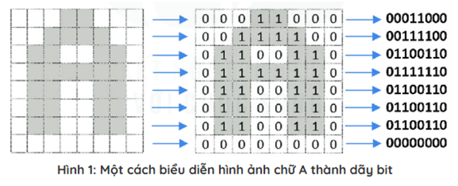
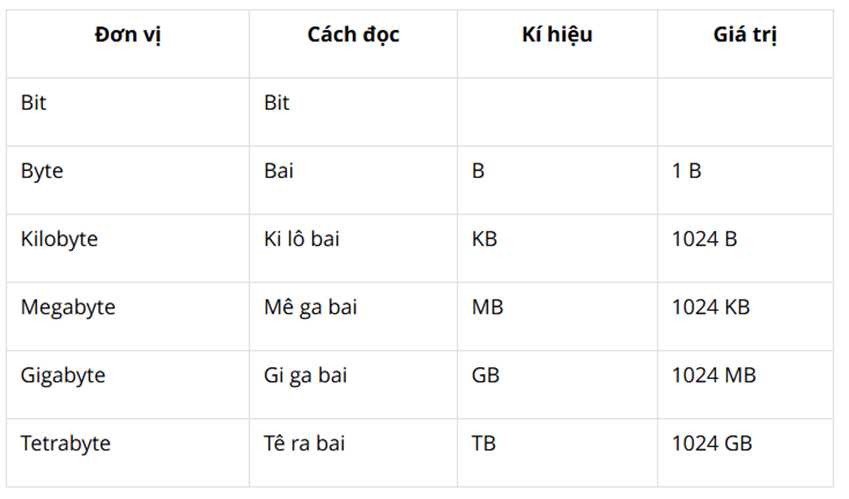

Chủ đề 1: Máy tính và cộng đồng
Bài 3: Thông tin trong máy tính
1. Thông tin và dữ liệu
a. Biểu diễn số
- - Với dãy số dài gấp đôi thì mỗi số sẽ được chuyển thành dãy có 4 kí hiệu 0 và 1.
- - Mỗi dãy các kí hiệu 0 và 1 như vậy được gọi là dãy bit. Kí hiệu là một bit.
- - Người ta có thể chuyển một số bất kì thành một dãy bit bằng cách tương tự như đã thực hiện ở trên.
b. Biểu diễn văn bản
- - Văn bản gồm các chữ cái (cả chữ hoa và chữ thường), các chữ số, dấu câu, kí hiệu, ... được gọi chung là các kí tự.
- - Văn bản được chuyển thành dãy bit bằng cách chuyển từng kí tự một.
- - Chuyển từ “DA CA” thành dãy bit như sau:
- + Dãy bit biểu diễn của kí tự D -01000100
- + Dãy bit biểu diễn của kí tự A - 01000001
- + Dãy bit biểu diễn của kí tự C - 01000011
- + Dãy bit biểu diễn của kí tự A - 01000001
c. Biểu diễn hình ảnh

d. Biểu diễn âm thanh
2. Đơn vị đo thông tin
- Một số đơn vị cơ bản đo dung lượng thông tin:

- Khả năng lưu trữ của các thiết bị nhớ thông dụng:
- + Bộ nhớ trong: 2 GB đến 16 GB.
- + Bộ nhớ ngoài:
- • Đĩa quang compact: 700MB
- • Đĩa quang kĩ thuật số: 4,7 GB đến 17GB.
- • Ổ đĩa cứng: vài trăm GB đến vài TB
- • Thẻ nhớ: hàng trăm GB hoặc cao hơn.